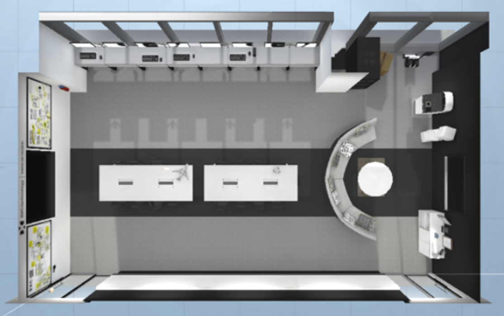

Web App · Immersive Experience Design
Virtual Digital Innovation Lab
Reimagining lab visits to bridge the gap between stakeholders and teams working remotely during COVID-19.

Overview
As a Digital Innovation Lab, our team focused on showcasing emerging technologies — from AR/VR to Bluetooth beacon technology — through proof-of-concept (POC) demos that brought new possibilities to life. These lab visits gave stakeholders a chance to explore how emerging tech could address their challenges and discover opportunities for future POCs.
The challenge. When Singapore entered its Circuit Breaker period, remote working and reduced footfall meant we could no longer host customers in person. Yet, interest in our demos continued, with stakeholders still requesting visits and access to our showcases. We needed to find a new way to bring these experiences to them, even when they could no longer step into our lab.
This led us to our “How Might We” statement “How might we continue to engage stakeholders through our lab visits, while tackling the challenges of remote working.”
Approach
We adapted the design thinking framework to our project needs, using a collaborative approach to uncover challenges and identify opportunities.
By prioritising rapid proof-of-concept development over a fully formed solution, we iteratively validated and refined our ideas through hands-on experimentation, lab visits, and real user feedback.

Solution
We developed the Virtual Digital Innovation Lab (VDIL), a web-based experience that recreates our physical innovation lab in a virtual environment, allowing stakeholders to explore it remotely.

By opening a shared link, stakeholders could navigate an accurate 3D replica of our Singapore lab using their keyboard and mouse. They could explore different demo stations to learn about emerging technologies and watch videos showcasing our proof-of-concept projects.

This gave stakeholders the flexibility to discover new technologies and understand their potential applications from anywhere, overcoming the limitations of remote working while preserving the exploration and discovery of an in-person lab visit.
Outcome
-
#1 Continued Engagement
Maintained stakeholder interest and virtual visits to the lab despite COVID-19 restrictions.
-
#2 Enhanced Experience
Offered an engaging, interactive way for stakeholders to explore the lab and discover emerging technologies remotely.
-
#3 Scalable Solution
Sparked interest from the Manila digital innovation lab in adapting the virtual experience for its own space.
Reflection
Human Guidance Still Matters. Although the Virtual Digital Innovation Lab (VDIL) was designed for users to explore independently, we found that most users preferred a guided experience. By joining a Microsoft Teams call and exploring the virtual lab together, we could walk them through the space, explain the technologies, and answer questions in real time. We retained this approach to make the experience more engaging and accessible.
Next project